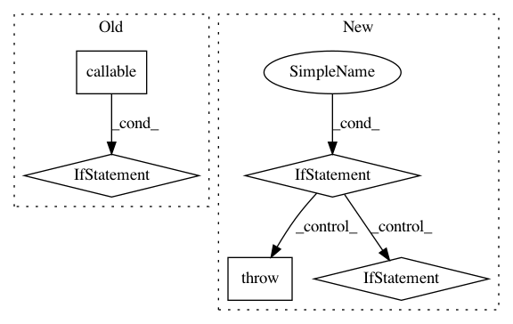

415be78cc0d1275a29d0ceda550d0d7a7a5224ea,python/ray/util/sgd/torch/torch_trainer.py,TorchTrainer,__init__,#,171
Before Change
"For more information, see "
"https://github.com/pytorch/examples/issues/467."))
if not (callable(model_creator) and callable(optimizer_creator)):
raise ValueError(
"Must provide a callable model_creator and optimizer_creator.")
if num_replicas is not None:
raise DeprecationWarning(
"num_replicas is deprecated. Use num_workers instead.")
After Change
serialize_data_creation=None,
data_loader_args=None,
):
if (model_creator or data_creator or optimizer_creator
or scheduler_creator or loss_creator):
raise DeprecationWarning(
"Creator functions are deprecated. You should create a "
"custom TrainingOperator, override setup, and register all "
"training state there. See TrainingOperator for more info. "
"If you would still like to use creator functions, you can "
"do CustomOperator = TrainingOperator.from_creators("
"model_creator, ...) and pass in CustomOperator into "
"TorchTrainer.")
if num_workers > 1 and not dist.is_available():
raise ValueError(
("Distributed PyTorch is not supported on macOS. "
"To run without distributed PyTorch, set "num_workers=1". "
"For more information, see "
"https://github.com/pytorch/examples/issues/467."))
if num_replicas is not None:
raise DeprecationWarning(
"num_replicas is deprecated. Use num_workers instead.")
if batch_size is not None:
raise DeprecationWarning(
"batch_size is deprecated. Use config={"batch_size": N} "
"specify a batch size for each worker or "
"config={ray.util.sgd.utils.BATCH_SIZE: N} to specify a "
"batch size to be used across all workers.")
if serialize_data_creation is True:
if log_once("serialize_data_creation"):
logging.warning(
"serialize_data_creation is deprecated and will be "
"ignored. If you require serialized data loading you "
"should implement this in TrainingOperator.setup. "
"You may find FileLock useful here.")
if data_loader_args:
raise DeprecationWarning(
"data_loader_args is deprecated. You can return a "
"torch.utils.data.DataLoader in data_creator. Ray will "
In pattern: SUPERPATTERN
Frequency: 3
Non-data size: 5
Instances
Project Name: ray-project/ray
Commit Name: 415be78cc0d1275a29d0ceda550d0d7a7a5224ea
Time: 2020-09-08
Author: amogkam@users.noreply.github.com
File Name: python/ray/util/sgd/torch/torch_trainer.py
Class Name: TorchTrainer
Method Name: __init__
Project Name: pavlin-policar/openTSNE
Commit Name: 1e15eeebbe3f9647f4a024ce9d44f5f6bb37b179
Time: 2018-06-22
Author: pavlin.g.p@gmail.com
File Name: tsne/tsne.py
Class Name: TSNE
Method Name: __init__
Project Name: elfi-dev/elfi
Commit Name: 86171ed61ee7bf10537928c10afdbeaadb983e26
Time: 2017-04-10
Author: jarno.lintusaari@aalto.fi
File Name: elfi/executor.py
Class Name: Executor
Method Name: execute